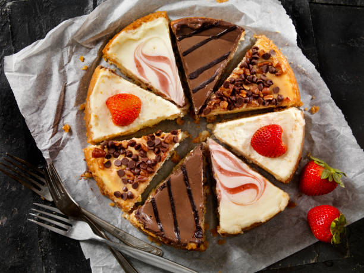
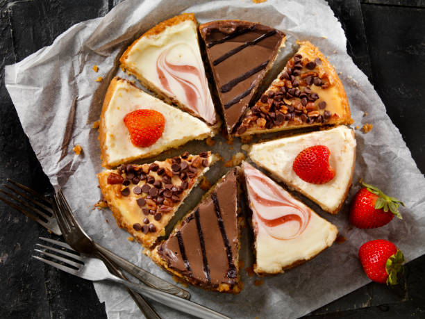

Cheese Cake
História | Receita | Chefe | Galeria | VideoHistória
Há Muito se especula sobre a origem do Cheesecake. Alguns acreditam que a primeira referência da receita foi criada na Grécia antiga e alterada pelos Romanos, que assavam tortas feitas com queijo e açúcar para oferecerem aos seus deuses, e que com o tempo, a receita foi se popularizando pelo mundo.
Receita
- 1 lata de Leite Condensado Magro NESTLÉ
- 1 pacote de bolacha maria
- 125 g de manteiga derretida
- 250 g de queijo creme magro
- 200 g de Natas LONGA VIDA bem frescas
- 8 folhas de gelatina
- 200 g de compota a gosto
Triture as bolachas e misture bem com a manteiga derretida. Coloque no fundo de uma tarteira, pressionando bem e reserve. Demolhe as folhas de gelatina em água fria. Bata as natas com o queijo e o Leite Condensado Magro. Escorra as folhas de gelatina e derreta-as em lume brando. Acrescente de imediato ao creme de queijo e bata bem. Deite na tarteira e leve ao frio cerca de 3 horas. Com a ajuda de uma faca, solte o cheesecake e cubra com a compota.
Galeria
 

Chefe

Lisandra Pita
Todos os pratos, de salgados a doces
Comidas caseiras deliciosas para partilhar com amigos e familiares
Video da Receita